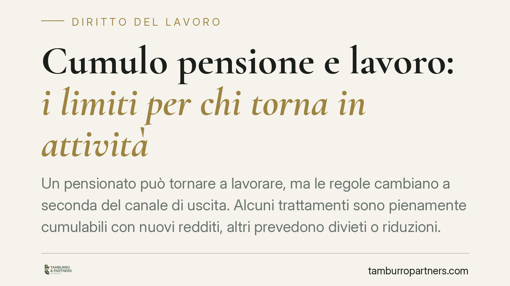

Cumulo pensione e lavoro: i limiti per chi torna in attività
Un pensionato può tornare a lavorare, ma le regole cambiano a seconda del canale di uscita. Alcuni trattamenti sono pienamente cumulabili con nuovi redditi, altri prevedono divieti o riduzioni. E dietro una cessazione solo apparente si nasconde il rischio più insidioso: la revoca del beneficio e il recupero delle somme già percepite.

Il quadro: non esiste una regola unica
La domanda ricorrente — «da pensionato posso ancora lavorare?» — non ha una risposta secca. Tutto dipende dal tipo di prestazione percepita. Il sistema distingue tra trattamenti pienamente cumulabili con i redditi da lavoro e regimi agevolati, dove il rientro in attività è vietato o comporta la sospensione dell'assegno.
La pensione di vecchiaia è oggi liberamente cumulabile con redditi da lavoro dipendente e autonomo. Anche la pensione anticipata ordinaria (quella maturata con i requisiti contributivi ordinari, senza penalizzazioni) è divenuta cumulabile: il previgente divieto di cumulo, che imponeva una finestra di incumulabilità nell'anno di decorrenza, è stato rimosso dalla Legge di Bilancio 2022 (L. 234/2021). Chi accede a questi canali, quindi, può riprendere a lavorare senza penalizzazioni sull'importo.
Cumulo pensione e lavoro nei regimi agevolati
Discorso opposto per i trattamenti di natura agevolata o anticipata rispetto ai requisiti ordinari. Qui il presupposto del beneficio è l'effettiva uscita dal mercato del lavoro, e la ripresa dell'attività è incompatibile con tale presupposto.
Rientrano in questa categoria Quota 103, l'APE sociale e l'Opzione donna. In questi casi il trattamento è di regola incumulabile con redditi da lavoro (con marginali eccezioni, ad esempio per il lavoro autonomo occasionale entro soglie contenute). La ripresa di un'attività produce la sospensione dell'erogazione per il periodo interessato.
> Nota redazionale. I requisiti e le soglie dei regimi agevolati sono soggetti a modifiche con ogni legge di bilancio. Prima di qualsiasi decisione, è indispensabile verificare la disciplina vigente nell'anno di riferimento.
Sospensione, riduzione e decadenza: non sono la stessa cosa
È un punto tecnico spesso trascurato. Occorre distinguere tre conseguenze diverse.
La sospensione blocca l'erogazione per i periodi in cui si produce reddito da lavoro incompatibile: l'assegno riprende una volta cessata l'attività. La riduzione decurta l'importo in misura proporzionale al reddito, senza azzerarlo. La decadenza è la conseguenza più grave: comporta la perdita del diritto al trattamento nel presupposto in cui è stato concesso.
Dove scatta la decadenza — tipicamente nei casi di rientro incompatibile con un regime anticipato — l'INPS procede al recupero dell'indebito, cioè alla richiesta di restituzione delle somme percepite senza titolo. Il recupero avviene di norma tramite trattenuta sui ratei successivi o, in mancanza, con richiesta diretta, ed è soggetto ai termini di prescrizione applicabili alle prestazioni previdenziali. Non è un rischio teorico: incide su importi che, protratti nel tempo, possono diventare rilevanti.
L'effettività della cessazione: attenzione alla simulazione
Il profilo più delicato riguarda la genuinità della cessazione del rapporto. L'accesso al pensionamento presuppone la fine effettiva dell'attività lavorativa. Se il rapporto viene formalmente chiuso e poco dopo riattivato con lo stesso datore, magari con inquadramento diverso ma mansioni identiche, l'operazione può essere qualificata come cessazione simulata.
Su questo terreno l'INPS adotta un approccio sostanzialistico: guarda alla realtà del rapporto, non alla sua veste formale. La giurisprudenza di legittimità ha consolidato il principio della prevalenza della sostanza sulla forma nella valutazione dell'effettiva estinzione del rapporto, valorizzando indici sintomatici quali la continuità delle mansioni, la brevità dell'intervallo tra cessazione e riassunzione, l'identità del datore e la sostanziale invarianza delle condizioni di lavoro.
L'onere di dimostrare la simulazione grava sull'ente previdenziale, ma la presenza di più indici concordanti può fondare la presunzione di continuità del rapporto. Il rischio, va sottolineato, non ricade solo sul pensionato: anche il datore di lavoro è esposto a contestazioni, contributive e sanzionatorie, per aver concorso a un'operazione elusiva.
Cosa fare in concreto
- Individua il tuo canale di pensionamento e verifica se il trattamento è cumulabile o soggetto a divieto/sospensione.
- Aggiorna la verifica normativa all'anno in corso: i regimi agevolati cambiano con ogni legge di bilancio.
- Comunica tempestivamente all'INPS l'eventuale ripresa dell'attività, per evitare erogazioni indebite e successivi recuperi.
- Se cessi e prevedi di rientrare, assicura un intervallo reale e un mutamento sostanziale delle condizioni, evitando riassunzioni immediate presso lo stesso datore.
- Fatti assistere prima, non dopo la contestazione: una valutazione preventiva riduce il rischio di decadenza e recupero.
Domande frequenti
Con la pensione anticipata ordinaria posso lavorare? Sì. Il divieto di cumulo è stato rimosso dalla Legge di Bilancio 2022: il trattamento è cumulabile con nuovi redditi da lavoro.
Con Quota 103 posso lavorare? Di regola no. Il rientro in attività è incompatibile e comporta la sospensione dell'assegno, salve limitate eccezioni per il lavoro autonomo occasionale entro soglie contenute.
Cosa rischio se torno dallo stesso datore subito dopo la pensione? L'operazione può essere qualificata come cessazione simulata, con revoca del beneficio, recupero delle somme percepite ed esposizione anche del datore di lavoro.
Contributo informativo a cura di Tamburro & Partners – Avv. Giuseppe Tamburro. Non costituisce parere legale.
Ogni storia di lavoro ha i suoi tempi.
Se gestisci HR e vuoi un confronto su contenzioso, ispezioni o licenziamenti, scrivi allo studio. Ti rispondiamo entro un giorno lavorativo.